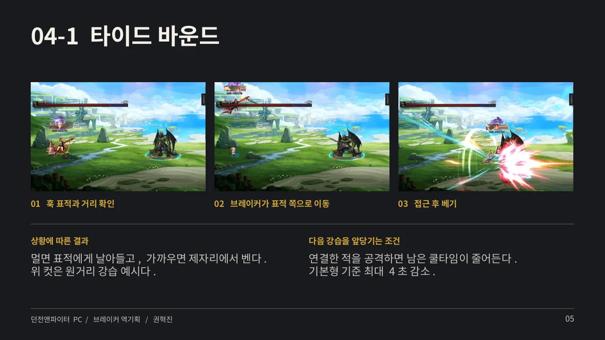
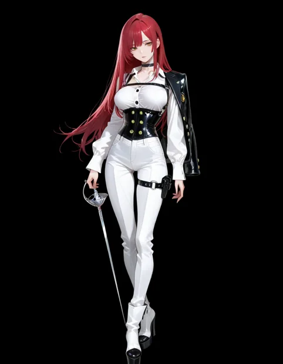
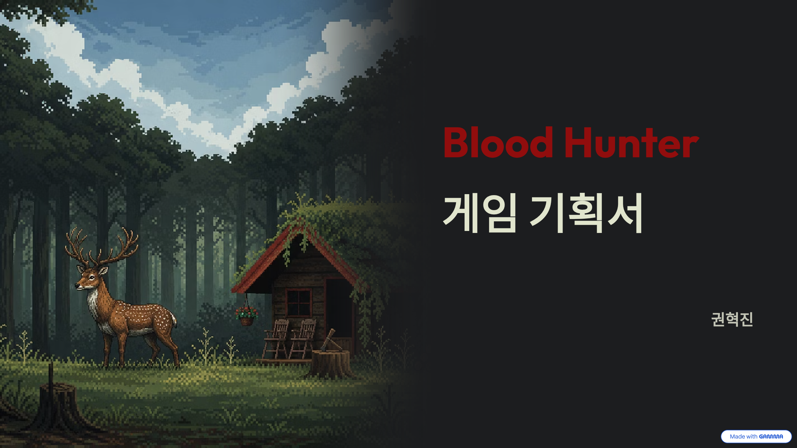

01 / PC 던전앤파이터 · 역기획
브레이커 역기획서

앵커는 공격 무기이자 접근 수단이다
앵커의 사슬은 적에게 접근하는 데, 날은 접근 후 넓게 베는 데 쓰입니다. 무기의 두 기능이 스킬 연계로 이어지는 방식에 주목했습니다.
같은 입력이 거리에 따라 강습 또는 제자리 베기로 이어지는 점을 분석하고, 시전 전에 둘을 구분하는 표식도 제안했습니다.
역기획서 전체 보기액션 게임에서 플레이어가 무엇을 보고, 어떤 타이밍에 움직이는지에 관심이 있습니다. 전투의 재미를 스킬과 시스템 규칙으로 구체화합니다.
기존 전직의 전투 규칙을 분석하고, 신규 전직과 오리지널 게임의 플레이를 설계했습니다.

앵커의 사슬은 적에게 접근하는 데, 날은 접근 후 넓게 베는 데 쓰입니다. 무기의 두 기능이 스킬 연계로 이어지는 방식에 주목했습니다.
같은 입력이 거리에 따라 강습 또는 제자리 베기로 이어지는 점을 분석하고, 시전 전에 둘을 구분하는 표식도 제안했습니다.
역기획서 전체 보기각성기를 제외한 공격 스킬의 마지막 적중으로 포앵트를 쌓습니다. 르프리즈로 이전 동작을 끊고 이어가는 공격의 첫 타격이 표식을 소모해 투셰를 발동합니다.
표식을 더 쌓을지, 지금 동작을 끊고 추가 피해를 낼지 선택하도록 설계했습니다.
기획서와 원화 전체 보기

보스의 혈액을 흡수하면 전투 능력이 강화되지만 야성이 높아져 NPC 이벤트와 결말에 영향을 줍니다. 정화하면 성장과 거래에 쓸 재화를 얻습니다.
기획 범위: 시나리오 · 보스 패턴 · 몬스터 전투 역할
게임 기획서 살펴보기팀으로 제작한 작업과 현재 기획 중인 게임입니다.


동양풍 저승사자를 소재로 한 3D 협동 액션 RPG. 직업별 전투 갈래와 스킬 규칙, 몬스터 전투 데이터를 기획하고 있습니다.